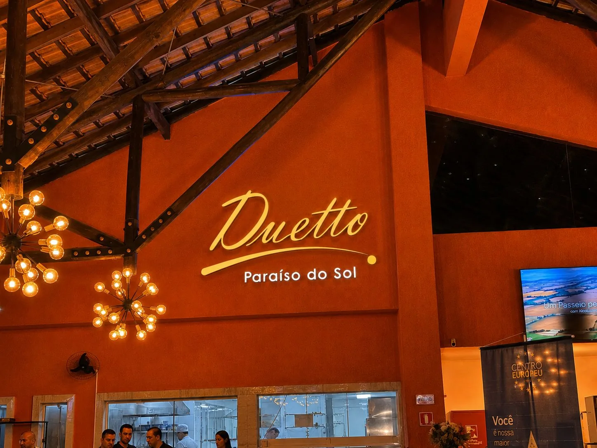
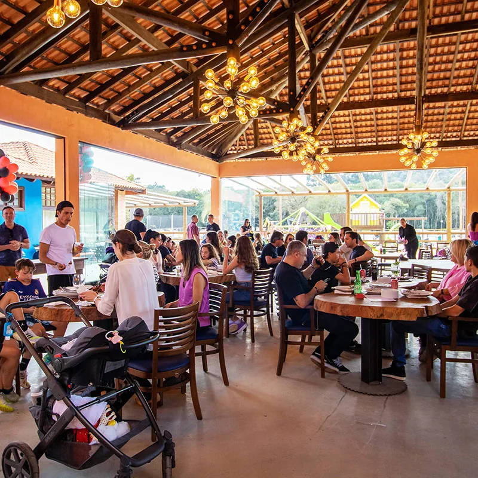

Sabores para viver, compartilhar e lembrar. Na Chácara Paraíso do Sol, a gastronomia agora faz parte da experiência.
Sob o comando de Maria Vitória Lorenzetti, cada prato é pensado para transformar encontros à mesa em momentos especiais. Comer aqui é mais do que se alimentar: é sentar, conversar e guardar o sabor do dia.
A comida é o centro de encontros, conversas, celebrações e memórias. No Day Use, na pousada ou em um evento, a gastronomia da chácara acompanha cada momento — do almoço em família ao jantar que fecha uma data especial.
Quiosques, bares, pizzaria e buffet se espalham pelo espaço para que o sabor esteja sempre perto da conversa, da vista e da festa.

A trajetória de Maria Vitória Lorenzetti nasce da tradição de Santa Felicidade, em Curitiba, onde a mesa sempre foi o lugar de reunir a família. Esse cuidado artesanal com cada ingrediente chega agora à Chácara Paraíso do Sol.
O resultado é uma cozinha afetiva e sofisticada: receitas com história, preparo atento e o respeito pelo tempo de cada sabor.
“Cada prato é pensado para transformar encontros à mesa em momentos especiais.”
Maria Vitória Lorenzetti
O conceito fatto a mano — feito à mão — inspira as receitas tradicionais da família. Na chácara, a Casa Limoncello ganha um espaço próprio para a venda de produtos locais, para levar um pouco dessa mesa para casa.
Receitas da família, com o cuidado artesanal de quem cozinha por afeto.
Um espaço na chácara para levar para casa os sabores da Casa Limoncello.
Inspiração nas receitas que atravessam gerações em Santa Felicidade.
Priorizamos ingredientes produzidos na região de Campo Largo, no conceito chilometro zero: menos distância, mais procedência e respeito à sazonalidade.
O que chega ao prato acompanha o ritmo da terra. Hortaliças, temperos e produtos locais entram no cardápio quando estão no melhor momento — e isso se sente no sabor.
Conheça as orgânicasIngredientes com origem conhecida, da região de Campo Largo.
O cardápio acompanha o que a terra oferece em cada época.
Do produtor à cozinha, com o caminho mais curto possível.
Uma cozinha que expressa o terroir da região.
Carnes assadas, peixes, massas e antepastos entram no repertório da casa, distribuídos entre quiosques, bares, pizzaria e buffet.
Preparos que pedem tempo, fogo e o encontro à mesa.
Opções leves e especiais para almoços e jantares.
A herança italiana da família, com o toque da casa.
Sabores espalhados pelo espaço, para cada ritmo do dia.
As refeições passam a integrar a experiência da pousada: do café da manhã a momentos especiais, sem pressa de voltar à rotina.
Hospedar-se na Chácara Paraíso do Sol é também sentar à mesa com calma, em um ritmo que só a natureza permite.
Conheça a pousadaUma nova carta de bebidas, desenvolvida por sommeliers, abre espaço para eventos de harmonização e encontros sobre vinhos.
Do brinde casual ao jantar harmonizado, a taça também faz parte da memória que se leva daqui.
Venha para o Day Use, hospede-se na pousada ou celebre um evento com o Buffet Marzia Lorenzetti.